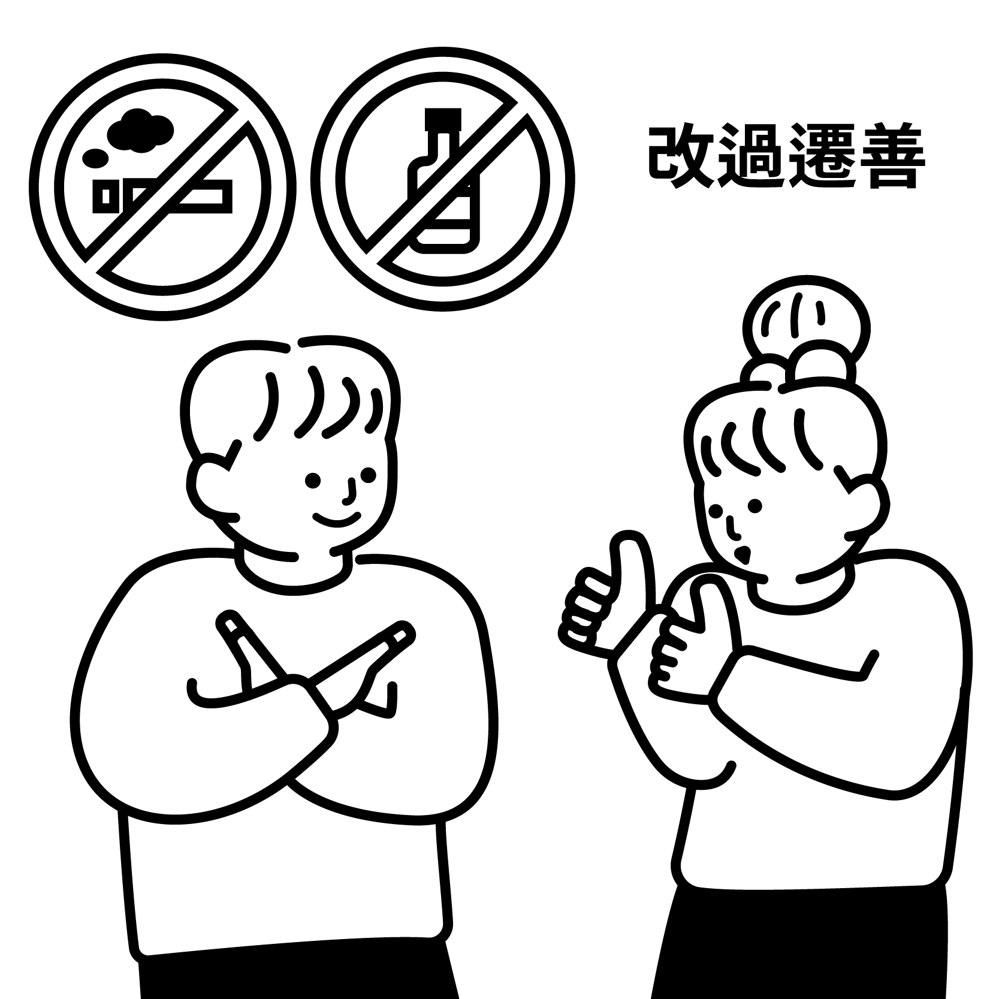

개과천선

改 고칠 개 | 過 지날 과 | 遷 옮길 천 | 善 착할 선
의미
지난날의 잘못을 고치어 착하게 됨
유래
잘못 들어선 길을 버리고 착한 사람으로 다시 태어나겠다는 결의를 실천하여 마침내 이룩함을 이르는 말.
같은 의미의 한자: 개과자신(改過自新), 회과천선(悔過遷善). 비슷한 단어로는 배암투명(背暗投明)이 있음

改 고칠 개 | 過 지날 과 | 遷 옮길 천 | 善 착할 선
지난날의 잘못을 고치어 착하게 됨
잘못 들어선 길을 버리고 착한 사람으로 다시 태어나겠다는 결의를 실천하여 마침내 이룩함을 이르는 말.
같은 의미의 한자: 개과자신(改過自新), 회과천선(悔過遷善). 비슷한 단어로는 배암투명(背暗投明)이 있음